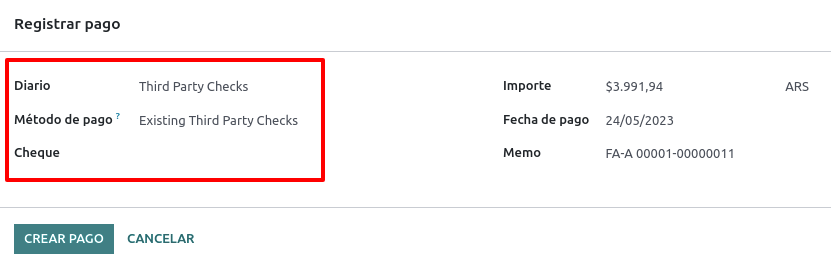
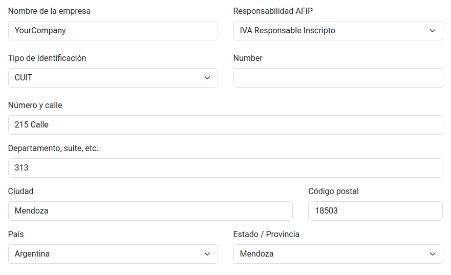

アルゼンチン¶
ウェビナー¶
以下で、ローカライゼーションの一般的な説明と設定方法についての動画をご覧頂けます。
設定¶
モジュールインストール¶
インストール アルゼンチンローカライゼーションの全機能を入手するには、次のモジュールを使用します:
名称 |
技術名 |
説明 |
|---|---|---|
アルゼンチン - 会計 |
|
デフォルト 会計ローカライゼーションパッケージ は、 AFIP の規則とガイドラインの下で、アルゼンチンで運用するための最小構成です。 |
アルゼンチン会計レポート |
|
VAT BookレポートとVATサマリーレポート。 |
アルゼンチン電子請求 |
|
AFIPの規定に基づき、ウェブサービスを通じて電子請求書を作成するための全ての技術的および機能的要件を含みます。 |
|
(オプション) 電子請求書を作成するために、eコマースのチェックアウトフォームで識別タイプとAFIP責任を確認できるようにします。 |
|
|
Allows registering withholdings during the payment of an invoice. |
会社の設定¶
ローカライゼーション・モジュールがインストールした後、最初のステップは会社のデータを設定することです。基本的な情報に加え、重要なフィールドとして AFIP Responsibility Type があります。

勘定科目表¶
会計では、3つの異なる 勘定科目表 パッケージから選ぶことができます。これらは企業のAFIP責任タイプに基づいており、より複雑な財務要件を持つ企業ほど多くの勘定科目を必要としない企業との違いを考慮しています：
Monotributista (227 勘定科目);
IVA Exento (290 勘定科目);
Responsable Inscripto (298 勘定科目).

マスタデータの設定¶
電子請求書認証情報¶
環境¶
AFIPのインフラは、テスト と 本番 の2つの別々の環境に複製されています。
本番 環境に移行する準備が整うまで、企業がデータベースをテストできるように、テスト環境が提供されます。これら2つの環境は互いに完全に分離されているため、一方のインスタンスのデジタル証明書はもう一方のインスタンスでは有効ではありません。
データベース環境を選択するには、 で Prueba (テスト) または Produccion (本番) を選択して下さい。
AFIP証明書¶
電子請求書とその他のAFIPサービス は、AFIPが提供する ウェブサービス (WS) で動作します。
AFIPとの通信を可能にするために、まず最初に デジタル証明書 を要求します。
証明書署名要求 (Odoo)。 このオプションを選択すると、証明書を要求するためにAFIPポータルで使用する拡張子`.csr`(証明書署名要求)のファイルが生成されます。

証明書を生成 (AFIP)。 AFIPポータルにアクセスし、このドキュメント に記載されている手順に従って証明書を取得します。
証明書とプライベートキーのアップロード(Odoo) 証明書が生成されたら、 証明書 フィールドの横にある 鉛筆 アイコンを使用して証明書をOdooにアップロードし、対応するファイルを選択します。

ちなみに
ホモロゲーション証明書の設定が必要な場合は、AFIP公式ドキュメント ホモロゲーション証明書 をご参照下さい。さらに、Odooでは電子請求書を認証証明書なしでローカルでテストすることができます。ローカルでテストする場合、以下のメッセージがチャターに表示されます:

取引先¶
識別タイプおよびVAT¶
アルゼンチンローカライゼーションの一環として、AFIPによって定義されたドキュメントタイプが パートナーフォーム で利用できるようになりました。情報はほとんどの取引に不可欠です。デフォルトで利用可能な6つの 識別 と32の非アクティブなタイプがあります。

注釈
AFIPによって定義された 識別タイプ の完全なリストはOdooに含まれていますが、一般的なものだけが有効です。
AFIP責任タイプ¶
アルゼンチンでは、顧客と仕入先に関連するドキュメントタイプと対応する取引は、AFIP責任タイプによって定義されます。このフィールドは、**パートナー・フォーム**で定義される必要があります。

税金¶
ローカリゼーションモジュールの一部として、税金は関連する会計勘定科目と設定と共に自動的に作成されます。例えば、Responsable Inscripto の税金は73です。

税金タイプ¶
アルゼンチンにはいくつかの税制があるが、最も一般的なものは以下の通りです:
VAT: これは通常の付加価値税であり、様々なパーセンテージを設定することができます;
Perception: 請求書に適用される税金の前払;
保持: 支払いに適用される税金の前払。
特別税¶
アルゼンチンの税金の中には、全ての企業で一般的に使用されていないものがあり、Odooではデフォルトで非アクティブと表示されています。新しい税金を作成する前に、その税金がすでに非アクティブになっていないか確認して下さい。

ドキュメントタイプ¶
アルゼンチンのようないくつかのラテンアメリカ諸国では、請求書や仕入先請求書のようないくつかの会計取引は、政府の財政当局によって定義されたドキュメントタイプによって分類されます。アルゼンチンでは、AFIP がそのような取引を定義する政府の財政当局です。
ドキュメントタイプは、印刷された報告書、請求書、および勘定科目の移動を一覧表示する仕訳において、明確に表示される必要のある重要な情報です。
各ドキュメントタイプは、それが割当てられている仕訳帳ごとに一意の連番を持つことができます。ローカライゼーションの一環として、ドキュメントタイプにはそのドキュメントが適用される国が含まれます(このデータはローカライゼーション・モジュールがインストールされると自動的に作成されます)。
ドキュメントタイプ に必要な情報はデフォルトで含まれているので、ユーザはこのビューで何も入力する必要はありません:

注釈
ドキュメントタイプ には、デフォルトでは非アクティブですが、必要に応じてアクティブにすることができるタイプがいくつかあります。
レター¶
アルゼンチンの場合、ドキュメントタイプ には、取引や操作のタイプを示すのに役立つ文字が含まれる。例えば、請求書が(n)に関連している場合です:
B2B取引 では、ドキュメントタイプ A を使用する必要があります。
B2C取引 では、ドキュメントタイプ B を使用する必要があります。
輸出取引 の場合、ドキュメントタイプ E を使用する必要があります。
ローカライゼーションに含まれるドキュメントには、それぞれの ドキュメントタイプ に関連する適切な文字がすでにあるので、それ以上の設定は必要ありません。

請求書で使用¶
各取引の ドキュメントタイプ は以下により決定されます:
請求書に関連する仕訳(仕訳がドキュメントを使用する場合)；
発行者と受領者のタイプ(例えば、買い手の財務体制と売り手の財務体制のタイプ)に基づいて適用されます。
仕訳帳¶
アルゼンチンローカライズでは、仕訳帳はその使用方法と内部タイプによって異なるアプローチを持つことができます。仕訳帳を設定するには、 にアクセスして下さい。
販売仕訳帳と購買仕訳帳については、オプション ドキュメントを使用 を有効にすることで、請求書と仕入先請求書に関連する ドキュメントタイプ のリストを有効にすることができます。請求書についての詳細は 2.3 ドキュメントタイプ を参照して下さい。
販売仕訳帳または購買仕訳帳で ドキュメントを使用 オプションが有効になっていない場合、会計請求書を作成することはできません。つまり、そのユースケースは、内部統制プロセスに関連する勘定科目記帳の監視に限定されることがほとんどしょう。
AFIP 情報 (別名 AFIP POS)¶
AFIP POSシステム は、販売 仕訳帳でのみ表示されるフィールドで、仕訳帳が作成される取引を管理するために使用される AFIP POS のタイプを定義します。
AFIP POSは以下を定義します:
ウェブサービスに関連したドキュメントタイプの連番。
電子請求書ファイルの構成とデータ。

ウェブサービス¶
ウェブサービス は様々な目的のために請求書を作成するのに役立ちます。以下にいくつかのオプションをご紹介します:
wsfev1:電子請求書: は最も一般的なサービスで、項目ごとの詳細がないドキュメントタイプA、B、C、Mの請求書を作成するために使用されます;
wsbfev1:電子会計ボンド: 資本財の請求書を発行し、経済省が付与する電子納税ボンドの特典を利用したい方のためのものです。詳細はこちらをご覧下さい： 会計ボンド；
wsfexv1: :guilabel:`wsfexv1: 電子輸出請求書: は、国際的な顧客や輸出処理を伴う取引の請求書を作成するために使用され、関連するドキュメントタイプはタイプ "E"です。
ここでは、ウェブサービスを扱う際に知っておくと便利な分野をいくつか紹介します:
AFIP POS番号: は、この AFIP POS に関連する操作を識別するために AFIP で設定された番号です;
AFIP POS アドレス:は、POSのために登録された商業住所に関するフィールドで、通常、会社と同じ住所です。例えば、企業が複数の店舗(会計拠点)を持っている場合、AFIPは企業が1拠点につき1つのAFIP POSを持つことを要求します。この所在地は請求書レポートに印刷されます;
統合帳簿: AFIP POSシステムがPreimpresaである場合、同じ文字を持つドキュメントタイプ(仕訳帳に適用可能)は同じ連番を共有します。例えば
請求書: FA-A 0001-00000002;
クレジットノート: NC-A 0001-00000003;
デビットノート: ND-A 0001-00000004.
付番¶
最初の請求書では、Odooは自動的にAFIPと同期し、最後に使用された連番が表示されます。
注釈
:guilabel:`購買仕訳帳`を作成する際に、ドキュメントタイプに関連付けるかどうかを定義することができます。ドキュメントを使用するオプションが選択された場合、ドキュメント番号は仕入先から提供されるため、ドキュメントタイプの連番を手動で関連付ける必要はありません。
使用とテスト¶
請求書¶
以下の情報は、取引先と仕訳帳が作成され、適切に設定された後の請求書作成に適用されます。
ドキュメントタイプ割当¶
取引先が選択されると、:guilabel:`ドキュメントタイプ`フィールドがAFIPドキュメントタイプに基づいて自動的に入力されます:
**顧客IVA Responsable Inscripto、接頭辞A**の請求書は、顧客情報とともに全ての税金が詳細に記載されているタイプのドキュメントです。

**最終顧客向けの請求書、プレフィクスB**は、税金が総額に含まれているため、税金の詳細を記載しないタイプのドキュメントです。

輸出請求書(プレフィクスE)は、商品を輸出する際に使用されるインコタームを示すドキュメントの一種です。

いくつかの請求書が同じ仕訳帳を使用していても、プレフィクスと順序は ドキュメントタイプ フィールドによって与えられます。
最も一般的な:guilabel:`ドキュメントタイプ`は、AFIP責任タイプの異なる組み合わせに対して自動的に定義されますが、請求書を確認する前にユーザが手動で更新することもできます。
電子請求書の要素¶
電子請求書を使用する場合、全ての情報が正しければ、対処が必要なエラーがない限り、請求書は標準的な方法で計上されます。エラーメッセージが表示された場合、注意が必要な問題と解決策が示されます。エラーが続く場合、問題が解決するまで請求書はドラフトのままとなります。
請求書が計上されると、AFIPの検証およびステータスに関連する情報がAFIPタブに表示されます:
AFIP認証： CAE番号
有効期限日: 顧客に請求書を引き渡す期限(通常はCAEが生成されてから10日後)；
結果:`は、請求書が :guilabel:`AFIPで受理された、または 観察付きで受理された かどうかを示します。

請求書税¶
:guilabel:`AFIP責任タイプ`に基づき、VAT税はPDFレポート上で異なって適用されます:
A. 税抜: この場合、レポート内で課税額を明確に識別する必要があります。この条件は、顧客が以下のAFIP責任タイプの**対応可能なInscripto**を持っている場合に適用されます;

B. 税込金額: これは税込金額が商品価格、小計、合計の一部として含まれることを意味します。この条件は、顧客が以下のAFIP責任タイプを持っている場合に適用されます:
IVA Sujeto Exento;
Consumidor Final;
Responsable Monotributo;
IVA liberado.

特別な使用ケース¶
サービス用請求書¶
:guilabel:`サービス`を含む電子請求書の場合、AFIPはサービスの開始日と終了日を報告する必要があり、この情報は:guilabel:`その他情報`タブに記入することができます。

請求書が検証される前に日付が手動で選択されなかった場合、値は請求書の月の初日と最終日で自動的に埋められます。

輸出請求書¶
:guilabel:`輸出取引`に関連する請求書は、仕訳帳がAFIP POSシステム**エキスポバウチャー - ウェブサービス**を使用し、適切なドキュメントタイプを関連付ける必要があります。

請求書で選択された顧客がAFIP責任タイプ Cliente / Proveedor del Exterior - Ley N° 19.640 で設定されている場合、Odooは自動的にこのタイプを割当てます：
輸出ウェブサービスに関連した仕訳帳;
輸出ドキュメントタイプ;
会計ポジション: Compras/Ventas al exterior;
Concepto AFIP: プロダクト / 商品の確定輸出；
免税。

注釈
輸出書類を作成するには、インコタームズを有効にして設定する必要があります。インコタームズは にあります。

財政債券¶
:guilabel:`電子納税証明書`は、資本財の請求書を発行し、経済省が付与する電子納税証明書の利用を希望する場合に使用されます。
これらの取引においては、以下の要件を考慮することが重要です:
通貨(パラメータ表による)と請求書見積;
税;
ゾーン;
各項目詳細;
Common Nomenclator of Mercosur (NCM)に応じたコード;
完全な説明;
正味単価;
数量;
単位;
ボーナス;
VATレート。
電子クレジット請求書MiPyme (FCE)¶
中小企業の請求書には、MiPyME**として分類されるいくつかのドキュメントタイプがあり、これらは**電子クレジット請求書**（スペイン語では**FCE）としても知られています。この分類は、中小企業の資金調達条件を改善し、取引先や仕入先に発行された債権を早期に回収することで、中小企業の生産性を向上させる仕組みを構築するものです。
これらの取引では、以下の要件を考慮することが重要です:
特定のドキュメントタイプ (201, 202, 206, など);
エミッタは、AFIPによってMiPyME取引に適格である必要があります;
金額は100,000 ARS以上である必要があります;
銀行口座のタイプCBUは、エミッタに関連していなければなりません。そうでない場合、請求書は検証されず、次のようなエラーメッセージが表示されます。

:guilabel:`送信モード`を設定するには、設定から:guilabel:`SDC`または:guilabel:`ADC`を選択します。

特定の請求書の 送信モード を変更するには、その他情報 タブに移動し、確認する前に変更します。

FCEドキュメントに関連する クレジット/デビット ノートを作成する場合：
:guilabel:`クレジットとデビットノート`ボタンを使用すると、請求書の全て情報が新しい:guilabel:`クレジットとデビットノート`に転送されます;
ドキュメントレターは、発行元のドキュメント(AまたはBのいずれか)と同じである必要があります;
元ドキュメントと同じ通貨を使用する必要があります。第二の通貨を使用する場合、為替レートが発行日と支払日で異なれば、為替差が生じます。クレジット/デビットノートを作成し、ARSでの支払額を減少/増加させることは可能です。

クレジット・ノート を作成する場合、2つのシナリオが考えられます:
FCEが拒否されたので、 クレジットノート はフィールド FCE,はキャンセルですか を True として持つ必要があります;
この場合、フィールド FCE,キャンセルか? は *空*(false)でなければなりません。

請求書印刷レポート¶
AFIPによって検証された電子請求書に関する:guilabel:`PDFレポート`には、フォーマットの下部にCAE番号を示すバーコードが含まれています。また、法的要件として有効期限も表示されます。

トラブルシューティングと監査¶
トラブルシューティングや監査を目的として、過去にAFIPに送られた請求書番号の詳細情報を取得することができます。この情報を取得するには、 開発者モード`を有効にして、 :menuselection:`会計 メニューに行き、AFIPの 請求書を確認 ボタンをクリックします。

また、OdooとAFIP間の連番同期に問題が発生した場合の参照として、特定のドキュメントタイプとPOS番号に対してAFIPで最後に使用された番号を取得することも可能です。

仕入先請求書¶
仕入先請求書に選択された仕入仕訳帳に基づいて、 ドキュメントタイプ が必須フィールドになりました。この値は、AFIPの発行者と顧客の責任タイプに基づいて自動入力されますが、必要に応じて値を変更することができます。

:guilabel:`ドキュメント番号`フィールドは手動で登録する必要があり、書式は自動的に検証されます。しかし、フォーマットが無効な場合、期待される正しいフォーマットを示すユーザエラーが表示されます。

仕入先請求書番号は、顧客請求書と同じように構成されるが、ドキュメントの順序は以下の書式を使用してユーザが入力します: ドキュメントプレフィックス - 手紙 - ドキュメント番号。
AFIPで仕入先請求書番号を検証¶
ほとんどの企業は、仕入先請求書がAFIPの有効なドキュメントに関連していることを確認するための内部コントロールを持っているので、自動検証は、次のレベルを考慮して、:menuselection:`会計 --> 管理設定 --> アルゼンチンローカライゼーション --> AFIPでドキュメントを検証`で設定することができます:
利用不可能: 検証は行われません(これがデフォルト値);
Available: the verification is done. In case the number is not valid, it only displays a warning but still allows the vendor bill to be posted;
Required: the verification is done, and it does not allow the user to post the vendor bill if the document number is not valid.

Odooで仕入先請求書を検証¶
仕入先検証設定を有効にすると、Odooの仕入先請求書に AFIP で検証 という新しいボタンが表示され、 AFIP認証コード フィールドの隣に配置されます。

仕入先請求書が AFIP で検証できない場合、ダッシュボードに 却下 という値が表示され、無効の詳細がチャターに追加されます。

特別な使用ケース¶
非課税コンセプト¶
燃料やガソリンの請求書など、VAT基準額には含まれない項目が含まれる取引もあります。
仕入先請求書は、VAT基準額の一部である各プロダクトについて1つの項目を使用し、免税概念の金額を登録するための追加項目を使用して登録されます。

パーセプションタックス¶
仕入先請求書は、VATベース金額の一部である各プロダクトに1つの項目を使用して登録され、パーセプションタックスはどのプロダクトラインでも追加することができます。その結果、VAT 用の税グループとパーセプション用の税グループが存在することになります。パーセプションのデフォルト値は常に 0.10 です。
VATパーセプションを編集して正しい金額を設定するには、 パーセプション の隣にある 鉛筆 アイコンを使用します。VATのパーセプション額を設定した後、請求書を検証することができます。

Withholding management¶
The Argentinean fiscal localization module is already loaded with the necessary withholdings
records, which can be seen by navigating to and removing the default Sale or Purchase filter. To verify these records, the
Argentina Payment Withholdings (l10n_ar_withholding) module must be installed:
Journal entries are not created when payments are posted unless outstanding accounts are set up. Thus, for this feature to work properly, it is important to verify that all payment methods within the bank journals have an outstanding payment and receipt account set.
This configuration is crucial for the proper accounting of withholding transactions with clients and vendors.
注釈
In Argentina, withholdings represent the cancellation of a specific portion of the total debt owed to a supplier or a reduction in the total payment to be collected from a customer. Therefore, one or multiple withholdings can be recorded for each payment applied to an invoice.
設定¶
While Odoo already creates most of the required withholdings inside the Taxes menu, in several cases, it is necessary to apply or modify certain configurations to correctly calculate the withholding amount on vendor payments. The following withholding types are available:
所得¶
For Earnings withholdings, Odoo already has a record for each regime group, which is stated under the name of the tax and the AFIP code.
Each of these records are ready to be used. As a good practice, the configuration should be double checked to make sure the configuration is updated and well-applied. The fields to validate are:
Amount: This is the percentage of the total payment amount which is withheld.
Non-Taxable Amount: Up to this amount, the withholding does not apply.
Minimum Withholding: If the calculated withholding amount is smaller than this value, the total withholding amount is set to
0.0.Withholding Sequence: This field helps to automate the capture of a withholding number under the payment line. If this field is not set, a number is manually captured while adding a withholding to a payment.
Earnings Scale¶
In this particular case, a percentage does not need to be set. Instead, this withholding is calculated based on the value of the Scale field.
To view, modify, or create new scales, navigate to . By default, the Argentinian localization is preconfigured with two main scales. However, scales should be created and updated as necessary to suit a business's needs.
注釈
Earnings scales are cumulative, which means that Odoo keeps track of the different records created for a bill and automatically calculates the proper withholding amount.
IIBB Total Amount¶
In this case, the necessary records related to the applicable province need to be created. The withholding amount is calculated based on the percentage Amount set on the tax configuration. Since Odoo does not automatically synchronize the percentages applicable to each province, this information needs to be manually updated.
The recommendation, in this case, is to always duplicate and apply the different configurations for each record to safeguard any technical configurations that allow the proper calculation and accounting of the withholding.
IIBB Untaxed¶
The configuration of non-taxable gross income withholdings is very similar to that of a total amount withholding, so the percentage Amount in each of the records needs to be maintained. However, Odoo comes preconfigured with several records that apply to different provinces. The difference, in this case, is that it is not necessary to establish a non-taxable amount or minimum withholding for this record type.
Partner withholding assignation¶
Once the proper configuration is set on each possible withholding for partners, the applicable withholdings need to be assigned to each contact. To do this, open the Contacts app and select the desired partner. In the Accounting tab, find the Purchase Withholdings table.
By using the additional fields From Date and To Date, the applicability of multiple withholdings can be automated across different date ranges. The ref field allows you to apply an internal control number to each withholding line, which is just for internal reference, so it does not affect any transactions and is not visible on them. These fields are accessible from the (adjust settings) menu.
From Date: the start of the withholding date range.
To Date: the end of the withholding date range.
ref: apply an internal control number to each withholding line that is only visible for internal reference and does not affect any transactions.
Automatic withholding calculation and application per payment¶
By applying new payments to vendor bills, Odoo automatically applies and calculates the proper withholding into the payment. Based on the record's configuration, it may be necessary to use a reference number for each withholding line.
More withholdings can be added, or computed withholdings can be edited if necessary.
重要
The total amount of the debt to be canceled is the total amount of the payment. However, Odoo still captures the net amount (i.e. the amount to be reconciled with the bank), which will be represented as the payment amount after the withholding application.
小切手管理¶
サードパーティ小切手および繰延/電子小切手管理* モジュールをインストールするには、 にアクセスし、技術名 l10n_latam_check でモジュールを検索し、 有効化 ボタンをクリックします。

このモジュールは、仕訳帳と支払に必要な設定を可能にします:
様々なタイプの小切手を作成、管理、コントロール。
自社小切手*と サードパーティ小切手*の管理を最適化
自社およびサードパーティの小切手の有効期限を簡単かつ効果的に管理できます。
アルゼンチンの電子請求書フローの設定が全て完了したら、自社小切手フローとサードパーティ小切手フローの設定も完了させる必要があります。
自社の小切手¶
:menuselection:`会計 --> 設定 --> 仕訳帳`で銀行仕訳帳を選択し、 :guilabel:`支払`タブを開いて、自社の小切手を作成するために使用する銀行仕訳帳を設定します。
小切手 は 支払方法 として利用できるはずです。そうでない場合は、 明細を追加 をクリックし、 支払方法 の下に
小切手と入力して追加して下さい。:guilabel:`電子小切手と繰延小切手を使用する`設定を有効にします。
注釈
この最後の設定は、印刷機能は**無効**になりますが、以下は可能になります:
手動で小切手番号を入力
小切手の支払日を割り当てるフィールドを追加

自社小切手の管理¶
自社小切手は仕入先請求書から直接作成することができます。この処理では、:guilabel:`支払登録`ボタンをクリックします。
支払登録のモダルで、支払を行う銀行仕訳帳を選択し、 小切手入金日 と 金額 を設定します。

注釈
現在の小切手を管理するには、 小切手現金入金日 フィールドを空白のままにするか、現在の日付で埋める必要があります。延期された小切手を管理するには、 小切手入金日 フィールドを未来に設定する必要があります。
既存の自社小切手を管理するには、 :menuselection:`会計 --> 取引先 --> 自社小切手`に移動します。このウィンドウには、小切手の支払いが必要な日付、小切手の総数量、小切手の支払総額などの重要な情報が表示されます。

このリストは、 :guilabel:銀行明細と照合`フィールドで確認することができる、銀行から引き落とされていない、まだ*銀行明細と未照合*小切手によって事前にフィルタリングされていることに注意することが重要です。自社小切手を全て見たい場合は、 X シンボルをクリックして 銀行照合なし フィルタを削除して下さい。

自社小切手の取消¶
To cancel an own check created in Odoo, navigate to and select the check to be cancelled, then click on the Void Check button. This will break the reconciliation with the vendor bills and the bank statements and leave the check in a cancelled state.

サードパーティ小切手¶
サードパーティ小切手を使用して支払登録するには、2つの特定の仕訳帳を設定する必要があります。これを行うには、 に移動し、2つの新しい仕訳帳を作成します:
サードパーティ小切手却下済サードパーティ小切手
注釈
複数の販売拠点があり、それらの仕訳帳が必要な場合は、手動でさらに仕訳帳を作成できます。
サードパーティ小切手 仕訳帳を作成するには、新規 ボタンをクリックして、以下のように構成します:
タイプ`として :guilabel:`現金 を選択します。
仕訳 タブで、 現金口座: を
1.1.1.02.010 Cheques de Tercerosに設定し、任意の ショートコード を入力し、 通貨 を選択します。

利用可能な支払方法は、*支払*タブに記載されています:
新しいサードパーティ小切手を受け取るには、 に進み、 新規サードパーティ小切手 を選択します。この方法は、*新規*のサードパーティ小切手を作成するために使用されます。
既存のサードパーティ小切手については、 に進み、 既存のサードパーティ小切手 を選択します。同じ手順を 未消込支払 タブでも繰り返します。この方法は、*既存*小切手を使用して仕入先から請求書を受け取ったり支払ったりする場合や、内部振替に使用します。
ちなみに
サードパーティ小切手仕訳帳を設定する際、デフォルトで表示される既存の支払方法を削除することができます。

*却下済サードパーティ小切手*仕訳帳も作成および/または設定する必要があります。この仕訳帳は、却下済サードパーティ小切手の管理に使用され、回収時に却下された小切手、または仕入先から拒否された小切手を送信するために使用できます。
却下済サードパーティ小切手 仕訳帳を作成するには、新規 ボタンをクリックして、以下のように構成します:
:guilabel:`仕訳帳名`に`却下済サードパーティ小切手`と入力して下さい。
タイプ`として :guilabel:`現金 を選択します。
仕訳 タブで、 現金勘定: を
1.1.1.01.002 却下済サードパーティ小切手に設定し、任意の ショートコード を入力し、 通貨 を選択します。
*サードパーティ小切手*仕訳帳と同じ支払方法を使用します。
新規サードパーティ小切手¶
顧客請求書用のサードパーティ小切手を新規に登録するには、支払登録 ボタンをクリックします。ポップアップウィンドウで、支払登録の仕入先として サードパーティ小切手 を選択する必要があります。
新規サードパーティ小切手 を 支払方法 として選択し、 小切手番号 、 支払日 、 小切手銀行 を入力します。オプションで、:guilabel:`小切手発行者Vat`を手動で追加することができますが、これは請求書に関連する顧客のVAT番号によって自動的に入力されます。

既存サードパーティ小切手¶
既存の*小切手で仕入先請求書を支払うには、 支払登録 ボタンをクリックします。ポップアップウィンドウで、支払登録の仕訳帳として サードパーティ小切手 を選択する必要があります。
既存のサードパーティ小切手 を 支払方法 として選択し、 小切手 フィールドから小切手を選択します。このフィールドには、仕入先請求書の支払に使用できる全ての**利用可能な既存の小切手**が表示されます。
**既存サードパーティ小切手**が使用された場合、その小切手に関連する操作を確認することができます。例えば、顧客請求書を支払うために作成されたサードパーティ小切手が、後に仕入先請求書を支払うために既存サードパーティ小切手として使用されたかどうかを確認できます。
これを行うには、場合に応じて または に進み、小切手をクリックします。現行の小切手仕訳帳 フィールドで => 小切手オペレーション をクリックすると、小切手の履歴と動きが表示されます。

メニューには、これらのオペレーションに関連する以下のような重要な情報も表示されます:
支払タイプ は、それが仕入先への支払なのか、顧客からの支払なのかを分類することができます。
小切手が現在登録されている 仕訳帳 。
オペレーションに関連する**パートナー**(顧客または仕入先)。
Eコマース電子請求¶
<general/install>をインストール し、アルゼンチンeコマース (l10n_ar_website_sale) モジュールをインストールして、以下の機能と設定を有効にして下さい:
顧客はeコマース用にオンラインアカウントを作成できます。
eコマースアプリケーションの必須会計フィールドのサポート。
販売オーダの支払をオンラインで受取る。
eコマースアプリケーションから電子ドキュメントを生成します。
設定¶
アルゼンチンの 電子請求 フローの全ての設定が完了したら、eコマースフローを統合するための特定の設定も完了する必要があります。
顧客アカウント登録¶
To configure your website for client accounts, follow the instructions in the checkout documentation.
自動請求¶
販売プロセスで電子ドキュメントを生成するようにウェブサイトを設定するには、 に移動し、 請求 セクションの 自動請求 機能を有効にして、オンライン決済が確認されたときに必要な電子ドキュメントを自動的に生成します。

自動請求 機能がドキュメントを生成するためにはオンライン決済が確認される必要があるため、関連するウェブサイトに 決済プロバイダー を設定する 必要があります。
プロダクト¶
オンライン決済が確認された際にプロダクトが請求されるようにするには、 :menuselection:`ウェブサイト --> eコマース --> プロダクト`から希望のプロダクトに移動します。:guilabel:`一般情報`タブで、:guilabel:`請求方針`を:guilabel:`オーダー済数量`に設定し、必要な :guilabel:`顧客税`を定義します。
eコマース用請求フロー¶
上記の構成が全て設定されると、顧客は、チェックアウトプロセスで会計フィールドを入力するために、*アルゼンチンeコマース*フローで次の必要な手順を完了することができます。
guilabel:`国`フィールドを`アルゼンチン`に設定すると、チェックアウトプロセスで会計フィールドの入力が可能になります。会計データを入力することで、対応する電子ドキュメントで購入を完了することができます。
顧客が購入と支払いを完了すると、請求印刷レポート に記載されたレイアウトと収入印紙を使用して、必要な請求書が生成されます。
流動性プロダクトの直販¶
流動性プロダクト直販は、第3者が関与する販売に使用されます。このような販売では、売り手と商品の所有会社がそれぞれ対応する販売と購入を登録することができます。
注釈
この機能を使用するには、<general/install>` アルゼンチン電子請求 モジュール (l10n_ar_edi) をインストールして下さい。
設定¶
購買仕訳帳¶
ドキュメントタイプ*流動性プロダクト*の電子仕入先請求書を作成するには、購買仕訳帳が必要です。この仕訳は、流動性プロダクト電子ドキュメントの生成に使用されるため、AFIPと同期させる必要があります。
既存の仕入勘定仕訳を変更したり、新しい仕入勘定仕訳を作成したりするには、 に移動します。次に、既存の仕入勘定仕訳を選択するか、または 新規 ボタンをクリックし、以下の必要情報を入力します:
タイプ: 購買 を選択して下さい。
ドキュメントを使用: このフィールドにチェックを入れると、電子ドキュメントの種類を選択できるようになります。
がAFIP POSである: 電子ドキュメントを作成するには、このフィールドをチェックして下さい。
AFIP POSシステム: 電子ドキュメントをウェブサービス経由でAFIPに送信するには、ドロップダウンメニューから 電子請求書 - ウェブサービス を選択して下さい。
AFIP POS番号: このAFIP POSに関連する操作を識別するためにAFIPに設定された番号です。
AFIP POSアドレス: POSに登録された商業住所に関するフィールドで、通常は会社と同じ住所になります。例えば、会社が複数の店舗(会計ローケーション)を持っている場合、AFIPはその会社がロケーションごとに1つのAFIP POSを持つことを要求します。この所在地は顧客請求書に印刷されます。

販売仕訳帳¶
販売仕訳帳は、プロダクトが第3者に販売され、その第3者が同じプロダクトを販売する際に顧客請求書を登録するために必要です。顧客請求書が電子化されないため、この仕訳はAFIPと同期されません。
既存の販売仕訳を変更したり、新しい仕訳を作成したりするには、 に移動します。次に、販売仕訳を選択するか、 新規 ボタンをクリックし、以下の必要情報を入力します:
タイプ: select 販売。
ドキュメントを使用: 仕訳帳上でこのフィールドをチェックし、電子ドキュメントのタイプ(この場合は電子顧客請求書)を選択します。

請求フロー¶
設定が全て完了すると、プロダクトを代理販売する会社によって、*流動性プロダクト仕入先請求書*が作成されます。例えば、特定のプロダクトの販売代理店などです。
レポート¶
ローカリゼーションのインストールの一環として、アルゼンチンの財務レポートは 会計 ダッシュボードで利用可能です。これらのレポートにアクセスするには、:menuselection:`会計 --> レポート --> アルゼンチン取引明細書`に移動します。
VAT申告書にアクセスするには、 に進み、:アイコン:`fa-book` (book) をクリックし、アルゼンチンVAT申告書 (AR) を選択します。
注釈
VAT申告書のレポートは、左上隅のドロップダウンメニューで選択することで、.zip ファイルとしてエクスポートできます。
VAT概要¶
このピボットテーブルは、月次のVAT合計をチェックするために設計されています。このレポートは社内用であり、AFIPには送信されません。
IIBB - 管轄別売上¶
このピボットテーブルでは、各管轄区域における総収入の検証済データを確認できます。これは、該当する税の宣誓供述書として使用されますが、AFIPには提出されません。

IIBB - 管轄別購買¶
このピボットテーブルでは、各管轄区域における総購買額を検証済であることを確認できます。これは、該当する税金の宣誓供述書として使用されますが、AFIPには提出されません。